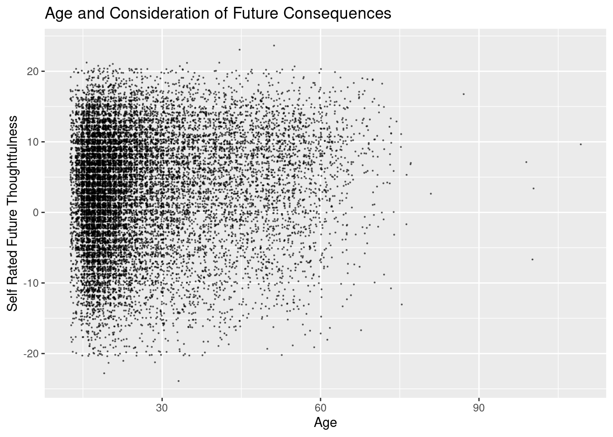

library(ggplot2)
library(tidyverse) #initializes the packages ── Attaching core tidyverse packages ──────────────────────── tidyverse 2.0.0 ──
✔ dplyr 1.1.4 ✔ readr 2.1.5
✔ forcats 1.0.0 ✔ stringr 1.5.1
✔ lubridate 1.9.4 ✔ tibble 3.3.0
✔ purrr 1.1.0 ✔ tidyr 1.3.1
── Conflicts ────────────────────────────────────────── tidyverse_conflicts() ──
✖ dplyr::filter() masks stats::filter()
✖ dplyr::lag() masks stats::lag()
ℹ Use the conflicted package (<http://conflicted.r-lib.org/>) to force all conflicts to become errorsdata <- 'fixed_data.csv'
read_data <- read.csv(data) |> filter(age <= 120 & accuracy<=100 & accuracy >= 0, if_any(Q1:Q12, ~ .x >= 0 ))
positive_val <- c("Q1","Q2","Q6","Q7","Q8","Q10") # Positive value questions
negative_val <- c("Q3","Q4","Q5","Q9","Q11","Q12")# Negative value questions
future_thinking <- read_data |> dplyr::mutate(positive_future = rowSums(read_data[ ,positive_val], na.rm = TRUE),
negative_future= rowSums(read_data[ ,negative_val], na.rm = TRUE))
total_future <- future_thinking |> mutate(average_Future = (positive_future - negative_future)) #Includes the Total amount of points into the data graph.
# The actual graph code
ggplot(total_future, aes(x = age, y = average_Future)) +
geom_point (position = "jitter", size =0.1, alpha = 1 / 2) + labs(title="Age and Consideration of Future Consequences", x = "Age" , y= "Self Rated Future Thoughtfulness")